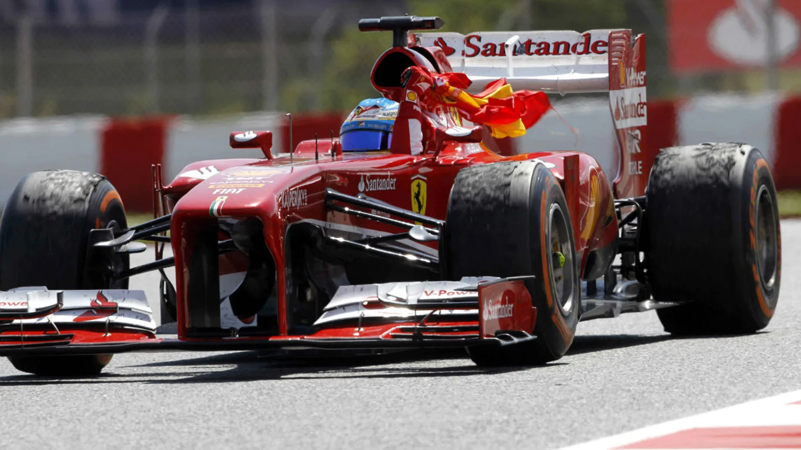

| Fernando Alonso |
|---|
|
| Datos Personales |
| Nombre: Fernando Alonso Díaz |
| Apodo: Magic, El Nano |
| Nacionalidad: Española |
| Formula1 |
| Victorias: 32 |
| Podios: 106 |
| Poles: 22 |
Piloto español de Fórmula 1. Ha ganado dos veces el Campeonato Mundial de Pilotos de Fórmula 1 en 2005 y 2006, ha sido subcampeón en 2010, 2012 y 2013, y obtuvo un tercer puesto en 2007 empatando con su compañero de equipo Lewis Hamilton. Ha competido para los equipos Minardi, Renault F1 Team (en el que fue bicampeón del mundo), McLaren y Scuderia Ferrari, siendo esta su escudería desde 2010 hasta 2014. El 20 de noviembre de 2014 la Scuderia Ferrari anuncia su marcha después de 5 temporadas. El 11 de diciembre de 2014 se anuncia su regreso a McLaren de la mano de Honda. Alonso es el sexto piloto con mayor cantidad de victorias en la historia de la Fórmula 1 con 32 grandes premios ganados y el tercer piloto con más podios: 97. Entre sus triunfos se cuentan 3 en el Gran Premio de Malasia, 3 en el Gran Premio de Alemania, 3 en el Gran Premio de Europa (uno de ellos en España), 2 en el Gran Premio de Mónaco, 2 en el Gran Premio de Gran Bretaña, 2 en el Gran Premio de Italia, 2 en el Gran Premio de Japón, y otros 2 en el Gran Premio de España.
Concretamente, hay que retroceder en el tiempo hasta 2013, cuando aún era piloto de Ferrari, para encontrar la última vez que Alonso ganó una carrera. Casi 10 años atrás, el 12 de mayo de 2013, se impuso en el Gran Premio de España, disputado en el circuito de Montmeló.
